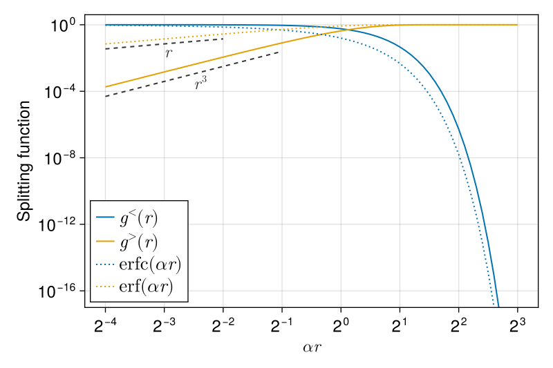
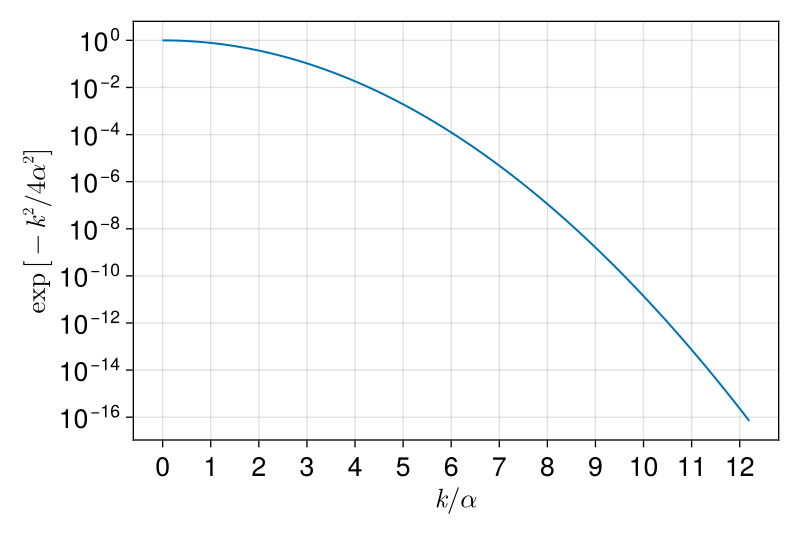

Ewald summation for Biot–Savart
The main originality of the VortexPasta solver is that it adapts the Ewald summation method to accelerate the computation of the Biot–Savart law along vortex filaments. See for example Arnold and Holm (2005) for a nice introduction to Ewald methods applied to the electrostatic interaction between point charges.
The adaptation of these methods to the vortex filament model is described in Polanco (2024). That paper also explains the role of the different parameters entering the method on accuracy and performance.
- Splitting the Biot–Savart integral
- Short-range velocity
- Long-range velocity
- Desingularisation
- Numerical integration
- Parameter selection
- Ewald method for the streamfunction
Splitting the Biot–Savart integral
The basic idea of the method is to split the Biot–Savart integral into short- and long-range parts:
\[\begin{align*} \bm{v}(\bm{x}) &= \frac{Γ}{4π} ∮_{\mathcal{C}} \frac{(\bm{s} - \bm{x}) \times \mathrm{d}\bm{s}}{|\bm{s} - \bm{x}|^3} \\ &= \frac{Γ}{4π} ∮_{\mathcal{C}} \Big[ g^{<}(|\bm{s} - \bm{x}|) + g^{>}(|\bm{s} - \bm{x}|) \Big] \frac{(\bm{s} - \bm{x}) \times \mathrm{d}\bm{s}}{|\bm{s} - \bm{x}|^3} \\ &= \bm{v}^{<}(\bm{x}) + \bm{v}^{>}(\bm{x}) \end{align*}\]
where the short-range and long-range scalar functions $g^<(r)$ and $g^>(r)$ have the properties:
- $g^<(r) + g^>(r) = 1$ for all $r > 0$;
- $g^<(r)$ decays exponentially with $r$, so that long-range interactions can be neglected beyond some cut-off distance $r_\text{cut}$ when computing the short-range velocity $\bm{v}^<$;
- $g^>(r) / r^2$ is non-singular and smooth at $r = 0$, which implies that $g^>(r)$ must quickly tend to 0 as $r → 0$. In periodic domains, this enables the use of the fast Fourier transform (FFT) to efficiently estimate long-range interactions.
The traditional choice of splitting functions satisfying all these properties is:
\[\begin{align*} g^<(r) &= \operatorname{erfc}(αr) + \frac{2αr}{\sqrt{π}} e^{-α^2 r^2} \\ g^>(r) &= \operatorname{erf}(αr) - \frac{2αr}{\sqrt{π}} e^{-α^2 r^2} \end{align*}\]
Here $\operatorname{erf}$ and $\operatorname{erfc}$ are respectively the error function and the complementary error function, which satisfy $\operatorname{erf}(z) + \operatorname{erfc}(z) = 1$. Above we have introduced the Ewald splitting parameter $α$, which is the inverse of a length scale. This parameter is purely numerical and, in theory, its choice has no impact on the final result $\bm{v}(\bm{x})$. In practice this is the case as long as other numerical parameters are well chosen (see discussion further below).
The two splitting functions are plotted below. In the horizontal axis, the scale $r$ is non-dimensionalised by the splitting parameter $α$. Note that the long-range splitting function is smooth at $r = 0$ and has the Taylor expansion $g^>(r) = \frac{4}{3 \sqrt{π}} (αr)^3 + \mathcal{O}(r^5)$. Also plotted are the two error functions. Note in particular that, for small $r$, $\operatorname{erf}(αr) = 2αr/\sqrt{π} + \mathcal{O}(r^3)$.

Code for this figure
using SpecialFunctions: erf, erfc
using CairoMakie
rs = 2.0.^(-4:0.1:3)
gs(αr) = erfc(αr) + 2αr / sqrt(π) * exp(-αr^2) # short-range
gl(αr) = erf(αr) - 2αr / sqrt(π) * exp(-αr^2) # long-range
xticks = LogTicks(-4:1:3)
yticks = LogTicks(-16:4:0)
fig = Figure(size = (600, 400), fontsize = 18)
ax = Axis(fig[1, 1]; xticks, yticks, xscale = log2, yscale = log10, xlabel = L"αr", ylabel = "Splitting function")
ylims!(ax, 1e-17, 4)
ls = lines!(ax, rs, gs.(rs); label = L"g^<(r)")
ll = lines!(ax, rs, gl.(rs); label = L"g^>(r)")
lines!(ax, rs, erfc.(rs); label = L"\mathrm{erfc}(αr)", linestyle = :dot, color = ls.color)
lines!(ax, rs, erf.(rs); label = L"\mathrm{erf}(αr)", linestyle = :dot, color = ll.color)
let rs = 2.0.^(range(-4, -1; length = 3)), color = :grey20 # plot ~r^3 slope
ys = @. 0.2 * rs^3
lines!(ax, rs, ys; linestyle = :dash, color)
text!(ax, rs[2], ys[2]; text = L"r^3", align = (:left, :top), color)
end
let rs = 2.0.^(range(-4, -2; length = 3)), color = :grey20 # plot ~r^1 slope
ys = @. 0.5 * (2 / sqrt(π)) * rs
lines!(ax, rs, ys; linestyle = :dash, color)
text!(ax, rs[2], ys[2]; text = L"r", align = (:left, :top), color)
end
axislegend(ax; position = (0, 0), labelsize = 20)
save("splitting_functions.svg", fig)For small $αr$, the long-range splitting function goes to zero as $r^3$, consistently with its Taylor expansion. This means that, as we wanted, $g^>(r) / r^2$ is non-singular and smooth at $r = 0$.
Short-range velocity
As seen in the figure above, the short-range splitting function is dominant for small $αr$, while it decays exponentially to 0 for large $αr$. In particular, for $r ≳ 5/α$, its value decays below about $10^{-10}$, meaning that it is safe to set the cut-off distance $r_\text{cut}$ around this value.
Therefore, the short-range velocity is obtained as
\[\bm{v}^<(\bm{x}) = \frac{\Gamma}{4π} ∫_{|\bm{s} - \bm{x}| < r_\text{cut}} g^<(|\bm{s} - \bm{x}|) \frac{(\bm{s} - \bm{x}) \times \mathrm{d}\bm{s}}{|\bm{s} - \bm{x}|^3}\]
i.e. the integral is performed over vortex points which are sufficiently close to the point of interest $\bm{x}$. Moreover, integrals are estimated using numerical integration.
Note that one can use a cell lists algorithm to further speed-up the search for nearby points.
Long-range velocity
The long-range velocity $\bm{v}^>$ has a simple physical interpretation. Indeed, it can be shown, by differentiating the splitting functions defined above, that its associated long-range vorticity $\bm{ω}^>(\bm{x}) ≡ \bm{∇} × \bm{v}^>(\bm{x})$ is nothing else that a Gaussian-filtered version of the actual vorticity field induced by the vortex filaments (which is singular).
More precisely, the long-range vorticity is given by the convolution $\bm{ω}^> = H ∗ \bm{ω}$, where $H(\bm{r}) = (α / \sqrt{π})^3 \, e^{-α^2 r^2}$ is a 3D Gaussian kernel. Intuitively, this means that the long-range velocity $\bm{v}^>$ corresponds to the velocity induced by a coarse-grained version of the vortex filaments. In this view, vortices are not "infinitesimal" anymore, but are closer to the smooth vortices which we are used to see in classical viscous fluids. In periodic domains, such a smooth vorticity field can be accurately and efficiently expanded in Fourier series, and the curl operator can be readily inverted in Fourier space to obtain the coarse-grained velocity field $\bm{v}^>$.
1. Estimating the vorticity in Fourier space
The idea is to first expand the (actual) vorticity field in Fourier series:
\[\bm{ω}(\bm{x}) = Γ ∮_{\mathcal{C}} δ(\bm{x} - \bm{s}) \, \mathrm{d}\bm{s} = ∑_{\bm{k}} \hat{\bm{ω}}(\bm{k}) \, e^{i \bm{k} ⋅ \bm{x}} \quad\text{for } \bm{k} ∈ \bm{K}.\]
Here $L$ is the domain period (assumed the same in all directions for simplicity), and $\bm{K} = \left\{ \frac{2π \bm{n}}{L}, \bm{n} ∈ \mathbb{Z}^3 \right\}$ is the set of wavenumbers associated to the Fourier series expansion. The Fourier coefficients $\hat{\bm{ω}}(\bm{k})$ are given by
\[\hat{\bm{ω}}(\bm{k}) = \frac{1}{L^3} ∫ \bm{ω}(\bm{x}) \, e^{-i \bm{k} ⋅ \bm{x}} \, \mathrm{d}\bm{x} = \frac{Γ}{L^3} ∮_{\mathcal{C}} e^{-i \bm{k} ⋅ \bm{s}} \, \mathrm{d}\bm{s}\]
To estimate this integral, we discretise the curves defining the support $\mathcal{C}$ of the vortex filaments, leading to a weighted sum over discrete points $\bm{x}_i$:
\[\hat{\bm{ω}}(\bm{k}) ≈ \frac{Γ}{L^3} ∑_{j} \bm{w}_i \, e^{-i \bm{k} ⋅ \bm{x}_i}\]
The weights are related to the length of the discrete segments and to the quadrature rule used to estimate the integrals over segments (see the Numerical integration section). The important point here is that, since the discrete points are generally not on an equispaced grid, one cannot directly use the fast Fourier transform (FFT) to efficiently evaluate these coefficients. Nevertheless, they can be efficiently and accurately estimated using the non-uniform FFT (NUFFT) algorithm. More precisely, this corresponds to a type-1 NUFFT, which converts from non-uniform sources in physical space to uniform wavenumbers $\bm{k}$ in Fourier space.
2. Coarse-grained vorticity and velocity in Fourier space
Once we have obtained the $\hat{\bm{ω}}(\bm{k})$ coefficients, obtaining the Fourier coefficients for the coarse-grained vorticity and coarse-grained velocity is straightforward. The former is obtained by convolution with a Gaussian, which is simply a product in Fourier space:
\[\hat{\bm{ω}}^>(\bm{k}) = \hat{\bm{ω}}(\bm{k}) \, e^{-k^2 / 4α^2}, \quad\text{where } k = |\bm{k}|\]
Similarly, the curl operator can be easily inverted in Fourier space to get the coarse-grained velocity:
\[\hat{\bm{v}}^>(\bm{k}) = \frac{i \bm{k}}{k^2} × \hat{\bm{ω}}^>(\bm{k}) = \frac{i \bm{k}}{k^2} × \hat{\bm{ω}}(\bm{k}) \, e^{-k^2 / 4α^2} \quad\text{for } k ≠ 0\]
The velocity is well defined only if $\hat{\bm{ω}}(\bm{0}) = \bm{0}$, that is, if the mean vorticity of the vortex filament system is zero. Otherwise we get division by zero, which is related to the fact that we're dealing with an infinitely periodic system and energy diverges with a non-zero mean vorticity.
This condition is automatically satisfied when dealing with closed vortex filaments. This may however not be the case for infinite filaments (for instance, putting a single straight infinite filament in the domain is ill-defined).
3. Notes on required resolution
Above we have assumed that we can evaluate Fourier coefficients for any wavenumber $\bm{k}$. In fact, for practical reasons, we cannot evaluate all coefficients $\hat{\bm{ω}}(\bm{k})$ for every possible $\bm{k}$, and we need to set the number of wavenumbers $N$ to compute in each direction (this is the parameter one tunes in NUFFT implementations). In other words, we need to truncate the estimations at some maximum wavenumber, namely the Nyquist frequency, which is related to $N$ by $k_\text{max} = π N / L$.
Similarly to the cut-off distance in physical space, one can expect that the appropriate value of $k_\text{max}$ (which is an inverse length scale) to get good accuracy should be proportional to the Ewald splitting parameter $α$. A rule of thumb is to choose a wavenumber at which the Gaussian factor $e^{-k_{\text{max}}^2 / 4α^2}$ matches the desired accuracy. For instance, at $k_{\text{max}} = 8α$, this factor has dropped to about $10^{-7}$ (see figure below). Of course, one can vary the $k_\text{max} / α$ ratio depending on the wanted accuracy.

Code for this figure
using CairoMakie
ks_α = range(0, 12.2; step = 0.1)
xticks = 0:12
yticks = LogTicks(-16:2:0)
ys = @. exp(-ks_α^2 / 4)
lines(
ks_α, ys;
axis = (yscale = log10, xticks, yticks, xlabel = L"k/α", ylabel = L"\exp \, \left[ -k^2 / 4α^2 \right]",),
figure = (fontsize = 20, size = (600, 400),),
)
save("gaussian_kalpha.svg", current_figure())4. Physical velocity at filament locations
The last step is to evaluate, from the coarse-grained velocity $\hat{\bm{v}}^>(\bm{k})$ in Fourier space, the physical coarse-grained velocity $\bm{v}^>(\bm{s})$ on vortex filament locations $\bm{s}$ (which, once again, are generally not on a regular grid). This operation can be written as:
\[\bm{v}^>(\bm{s}_i) = ∑_{\bm{k}} \hat{\bm{v}}^>(\bm{k}) \, e^{i \bm{k} ⋅ \bm{s}_i}\]
for a set of locations $\bm{s}_i ∈ \mathcal{C}$. Note that in practice this sum is truncated to the chosen $k_{\text{max}}$.
This operation can be efficiently computed using a type-2 NUFFT (from uniform wavenumbers $\bm{k}$ to non-uniform locations $\bm{x}$), which can be understood as an interpolation of the coarse-grained velocity field on the chosen points.
From the above steps, we can directly write the large-scale velocity at $\bm{s}_i$ from the geometry of vortex lines:
\[\newcommand{\dd}{\mathrm{d}} \newcommand{\svec}{\bm{s}} \newcommand{\sj}{\svec_i} \newcommand{\kvec}{\bm{k}} \begin{align*} \bm{v}^>(\sj) &= ∑_{\kvec ≠ \bm{0}} \frac{i}{k^2} \, e^{-k^2 / 4α^2} \kvec × \hat{\bm{ω}}(\kvec) \, e^{i \kvec ⋅ \sj} \\ &= \frac{iΓ}{L^3} ∑_{\kvec ≠ \bm{0}} \frac{e^{-k^2 / 4α^2}}{k^2} ∮_{\mathcal{C}} e^{i \kvec ⋅ (\sj - \svec)} \, \kvec × \dd \svec \\ &= \frac{Γ}{L^3} ∑_{\kvec ≠ \bm{0}} \frac{e^{-k^2 / 4α^2}}{k^2} ∮_{\mathcal{C}} \sin[\kvec ⋅ (\svec - \sj)] \, \kvec × \dd \svec \end{align*}\]
which is analogous to the term for long-range electrostatic forces in e.g. Arnold and Holm (2005), Eq. (17).
Desingularisation
As discussed in the VFM page, the Biot–Savart integral must be desingularised if the velocity is to be evaluated on a point $\bm{x} = \bm{s}_i$ belonging itself to the curve.
In this case, the actual velocity that we want to compute is
\[\newcommand{\vvec}{\bm{v}} \newcommand{\svec}{\bm{s}} \newcommand{\sj}{\svec_i} \begin{align*} \vvec(\sj) &= \vvec_{\text{local}}(\sj) + \vvec_{\text{non-local}}(\sj) \\ &= \vvec_{\text{local}}(\sj) + \Big[ \vvec^<_{\text{non-local}}(\sj) + \vvec^>_{\text{non-local}}(\sj) \Big] \end{align*}\]
which basically means that both short-range and long-range components should skip the computation of their respective integrals in the vicinity of $\bm{s}_i$, and that the expression for the local velocity should be used instead.
The terms local/non-local and short/long-range are completely orthogonal and should not be confused! The first pair of terms refer to the VFM while the second pair refers to Ewald summation. For example, as discussed right below, it is possible (and it makes sense) to compute the local long-range velocity component.
For the short-range component, it is straightforward to skip the local part of the modified Biot–Savart integral: one just integrates over segments within the cut-off distance, but excluding the two segments which are in direct contact with $\bm{s}_i$ (the $\mathcal{C}_i$ region represented in the trefoil figure of the VFM page).
In the case of the long-range component special care is needed, as the procedure detailed above computes the full (coarse-grained) Biot–Savart integral, including the "singular" region. As discussed above, the modified long-range integral is actually not singular, so this is not a problem. But it means that we now need to subtract the local long-range velocity:
\[\newcommand{\vvec}{\bm{v}} \newcommand{\svec}{\bm{s}} \newcommand{\dd}{\mathrm{d}} \newcommand{\sj}{\svec_i} \vvec^>_{\text{local}}(\sj) = \frac{Γ}{4π} ∫_{\mathcal{C}_i} g^>(|\svec - \sj|) \frac{(\svec - \sj) × \dd \svec}{|\svec - \sj|^3}\]
which can be numerically computed using the same method as for the non-local short-range velocity.
To summarise, in practice the velocity on a vortex position $\bm{s}_i$ is computed as
\[\newcommand{\vvec}{\bm{v}} \newcommand{\svec}{\bm{s}} \newcommand{\sj}{\svec_i} \vvec(\sj) = \vvec_{\text{local}}(\sj) + \vvec^<_{\text{non-local}}(\sj) - \vvec^>_{\text{local}}(\sj) + \vvec^>(\sj)\]
where the first term is computed using an analytical expression based on Taylor expansions, the second and third terms are estimated by numerical integration (using quadratures), and the fourth term is indirectly computed using (non-uniform) fast Fourier transforms.
Numerical integration
Both the short-range and long-range computations use quadrature rules to approximate line integrals using numerical integration. The general strategy that has been implemented is to perform integrals segment-by-segment, and to use a quadrature rule of few points for each segment.
To be more explicit, say that we have a single closed vortex line (for example the trefoil in the VFM page) and that we want to compute the short-range non-local velocity induced by the vortex on $\bm{s}_i$:
\[\newcommand{\vvec}{\bm{v}} \newcommand{\svec}{\bm{s}} \newcommand{\sj}{\svec_i} \newcommand{\sdiff}{\svec - \sj} \newcommand{\sdiffx}{\svec(ξ) - \sj} \newcommand{\dd}{\mathrm{d}} \newcommand{\Ccal}{\mathcal{C}} \newcommand{\Cj}{\Ccal_i} \begin{align*} \vvec^<(\sj) &= \frac{Γ}{4π} ∫_{\Ccal ∖ \Cj} g^<(|\sdiff|) \frac{(\sdiff) × \dd\svec}{|\sdiff|^3} \\ &= \frac{Γ}{4π} ∑_{j = 1}^N\vphantom{∑}' ∫_{ξ_j}^{ξ_{j + 1}} g^<(|\sdiffx|) \frac{(\sdiffx) × \svec'(ξ)}{|\sdiffx|^3} \, \dd ξ, \quad j ∉ \{i - 1, i\} \end{align*}\]
Here $N$ is the number of discretisation points of the curve, and the prime over the summation symbol indicates that the indices $j ∈ \{i - 1, i\}$ (corresponding to the two segments in contact with $\bm{s}_i$) should be excluded. So the integral is split onto $N - 2$ line integrals. The next step is to approximate each of these integrals using a quadrature rule:
\[\newcommand{\vvec}{\bm{v}} \newcommand{\svec}{\bm{s}} \newcommand{\sj}{\svec_i} \newcommand{\sdiff}{\svec - \sj} \newcommand{\sdiffx}{\svec(ξ) - \sj} \newcommand{\sdiffm}{\svec(ξ_m) - \sj} \newcommand{\dd}{\mathrm{d}} \newcommand{\Ccal}{\mathcal{C}} \newcommand{\Cj}{\Ccal_i} ∫_{ξ_j}^{ξ_{j + 1}} f(ξ) \, \dd\svec(ξ) ≈ ∑_{m = 1}^M w_m f(ξ_m),\]
where $w_m$ and $ξ_m ∈ [ξ_j, ξ_{j + 1}]$ are appropriately-chosen quadrature weights and points, respectively. In practice, we use Gauss–Legendre quadratures with few (typically ~4) points per segment.
Parameter selection
As detailed above, this method introduces a few parameters which must be tuned for accuracy and performance. In fact, most of these parameters are related and should not be treated independently. For instance, the physical- and Fourier-space cut-offs $r_\text{cut}$ and $k_\text{max}$ are clearly related to the Ewald splitting parameter $α$. As described in Polanco (2024), these can be related by a unique non-dimensional parameter $β = α r_\text{cut} = k_\text{max} / 2α$ controlling the accuracy of the method.
In practice, one recommended way of setting the parameters is as follows:
Start by setting the physical domain period $L$. It is convenient and standard practice to choose $L = 2π$, which means that the corresponding wavenumbers $\bm{k}$ in long-range computations will be integers (in general, $k = 2πn/L$ with $n = 0, ± 1, ± 2, \ldots$). But in principle one can choose any positive value of $L$.
Set the number of Fourier modes $N$ in each direction. Choosing $N$ also sets the maximum resolved wavenumber $k_{\text{max}} = πN/L$ as well as the physical grid spacing $δ = L/N$ associated to the long-range fields. The value of $N$ should be tuned to have a good balance between the time spent on short-range and long-range computations.
Now set the non-dimensional parameter $β$ to the desired accuracy. For example, $β = 3.5$ roughly gives $10^{-6}$ relative accuracy.
From $β$ and $k_{\text{max}}$, one obtains the remaining parameters $α = k_{\text{max}} / 2β$ and $r_\text{cut} = β / α$.
For simplicity here we have assumed that the domain size $L$ and the resolution $N$ are the same in all directions, but things are easy to generalise to different $L$ and $N$ per direction. In all cases, one usually wants the physical grid spacing $δ = L/N$ (or equivalently the maximum resolved wavenumber $k_{\text{max}}$) to be the same in all directions.
It may also be a good idea to "round" the chosen value of $N$ so that the FFTs performed in long-range computations have sizes described by powers of 2 or 3 (for which the FFT is most efficient). Note that, to reduce aliasing errors, the NUFFT oversamples the data from $N$ to $Ñ = σN > N$, and this $Ñ$ is the actual size of the performed FFTs. As an example, by default the NonuniformFFTsBackend in VortexPasta uses an oversampling of $σ = 3/2$. Therefore, choosing $N = 85 ≈ 2/3 × 128$ leads to FFTs of size $Ñ = 128 = 2^7$, which is what we want.
Another parameter to choose is the size of the quadrature rules for numerical integration. Using Gauss–Legendre quadratures, integrals seem to converge quite fast using a small number of quadrature nodes per filament segment. Typically, using 3 nodes seems to be enough when using quintic splines to describe filaments.
Ewald method for the streamfunction
As in the case of the velocity, the Biot–Savart integral for the streamfunction decays slowly with the distance $r = |\bm{x} - \bm{s}|$, and its computation can be accelerated using Ewald summation. In fact, the Ewald summation method exposed above for the velocity is derived from that for the streamfunction, which is simpler and closer to the way the Ewald method is usually introduced in electrostatics (where the electrostatic potential is the analogue of the streamfunction).
In the case of the streamfunction, the idea of Ewald summation is to split the singular and slowly-decaying Green's function $G(\bm{r})$ onto a smooth long-range component $G^>(\bm{r})$ and a short-range fast-decaying component $G^<(\bm{r})$. The standard way of doing this is via the identity:
\[G(\bm{r}) = \frac{1}{4πr} = \frac{\operatorname{erfc}(αr)}{4πr} + \frac{\operatorname{erf}(αr)}{4πr} = G^<(\bm{r}) + G^>(\bm{r}),\]
where $\operatorname{erf}$ and $\operatorname{erfc}$ are respectively the error function and the complementary error function already introduced above, and $α$ is the same Ewald splitting parameter introduced in that section.
This leads to modified Biot–Savart integrals for the short-range and long-range streamfunction. For example, the short-range integral is given by:
\[\bm{ψ}^<(\bm{x}) = (G^< ∗ \bm{ω})(\bm{x}) = \frac{Γ}{4π} ∮_{\mathcal{C}} \frac{\operatorname{erfc}(α |\bm{x} - \bm{s}|)}{|\bm{x} - \bm{s}|} \, \mathrm{d}\bm{s}\]
Taking the curl of those integrals eventually leads to the $g^<(\bm{r})$ and $g^>(\bm{r})$ splitting functions that we used for the velocity.